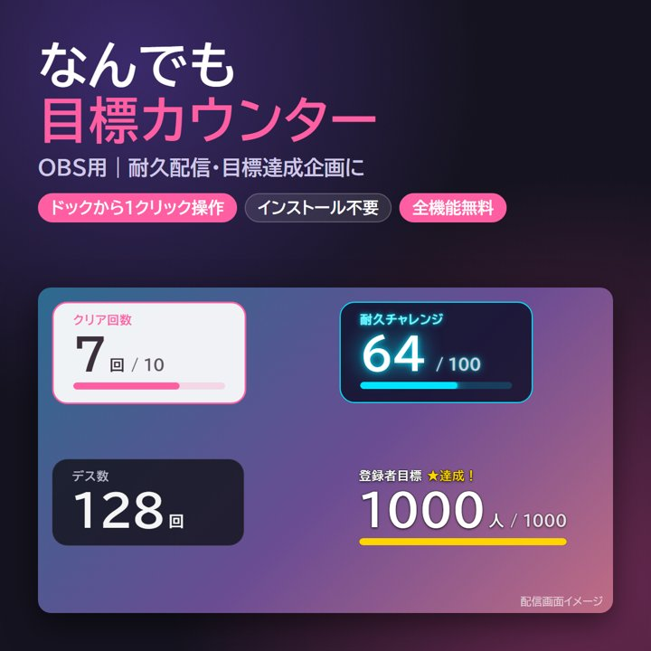
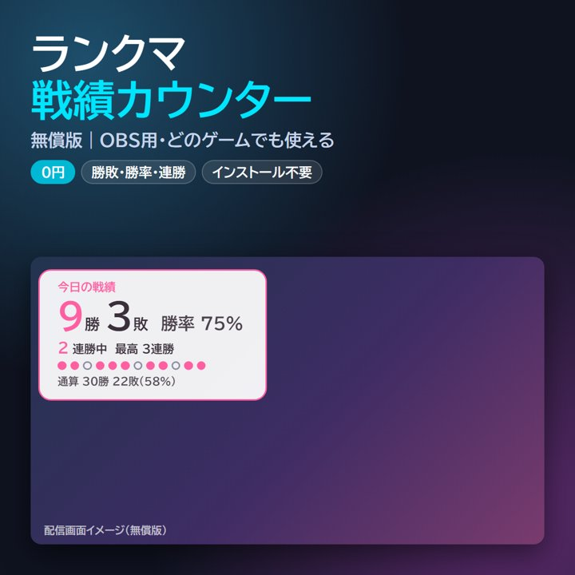
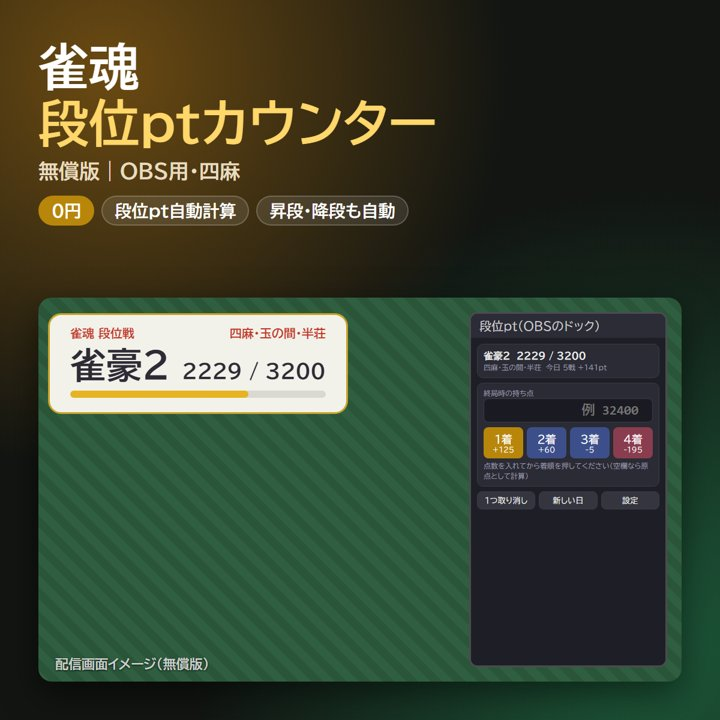

URLを貼るだけ。
無料のOBS配信ツール
耐久・目標企画、ランクマの勝敗、雀魂の段位ptを配信画面に表示するカウンターです。
- ダウンロード不要
- インストール不要
- 完全無料
- 数値は自動保存


使い方（ダウンロードせずに使う場合）
- 上の「設定してURLを作る」を開き、見出しやデザインを選ぶ
- 表示されたURLをコピーし、OBSの「ソース」→「＋」→「ブラウザ」のURL欄に貼る
- 操作パネルがあるツールは、パネル用URLを「ドック」→「カスタムブラウザドック」に貼る
インターネットにつながらない環境で使いたい場合や、手元にファイルを置きたい場合は、BOOTHからZIPをダウンロードできます（無料）。
ランクマ戦績カウンターには、OBSのドックから「勝ち」「負け」をワンクリックで記録できる操作パネル、キャラ別戦績、勝ち越し目標ゲージ付きの有償版（300円）もあります。